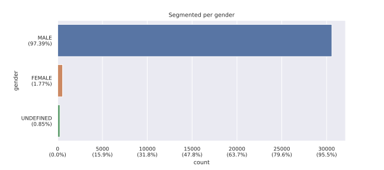

Box-and-whisker plot of scores per field

A match is defined as any first and family name combination (or alternative spellings) that was found exactly in the OCR of a newspaper page.
The data below does not include 152614 "skipped" matches. Only matches with a score > 0 are considered "quality" matches and are added to the Namenlijst block on hetarchief.be
|
1153881
|
possible matches | of which |
121986
10.6% of possible matches
|
with score > 0 |
|
110239
20.2% of total 544807 names from IFFM namenlijst
|
names from IFFM namenlijst with possible matches | of which |
31293
28.4% of possible names from IFFM namenlijst
5.7% of total names from IFFM namenlijst
|
with score > 0 |
|
102729
37.4% of total 274924 newspaper pages
|
newspaper pages with possible matches | of which |
32366
31.5% of possible newspaper pages
11.8% of total newspaper pages
|
with score > 0 |
Summary of the results of manual attestation (using our attestation tool).
Breakdown of the matches that have a score > 0%.
Breakdown of the score, shows the amount of each field that was found and used to increase the score.
Box-and-whisker plot of scores per field
The individual score per field (only matches that have been attested are shown)

Breakdown of data about people matched (segmentation data from IFFM)


These matches have been manually skipped, usually because the person is well-known and does not correspond to the person with the same name in the IFFM Namenlijst (eg. the French War Minister, a famous cyclist, a street name, writer, etc.).
Current list of automatically skipped names: